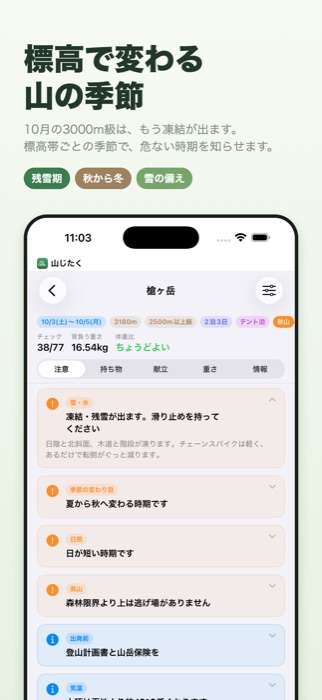
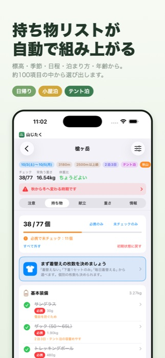
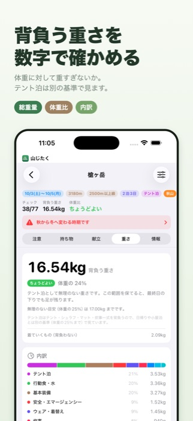
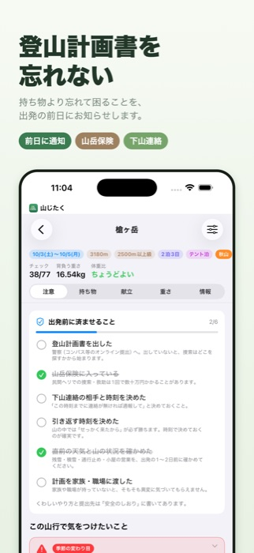
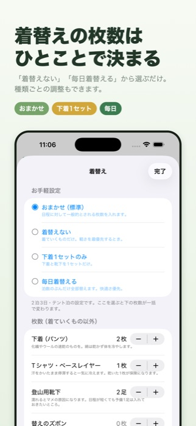
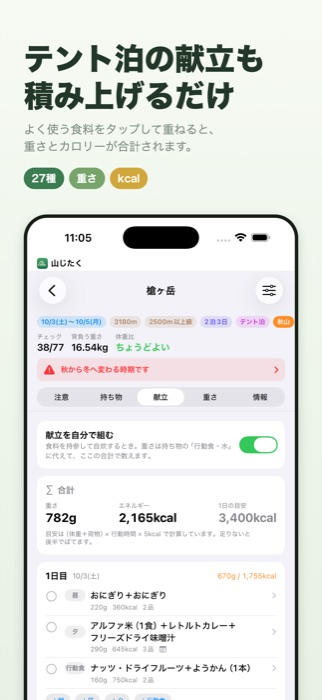
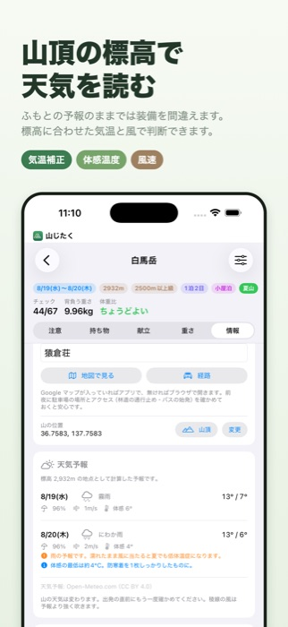
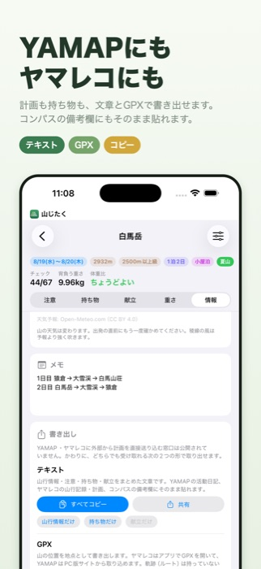
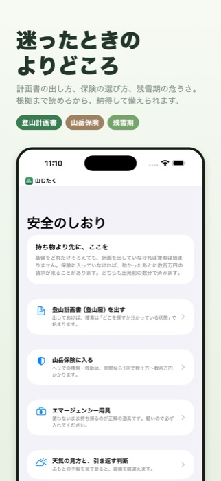
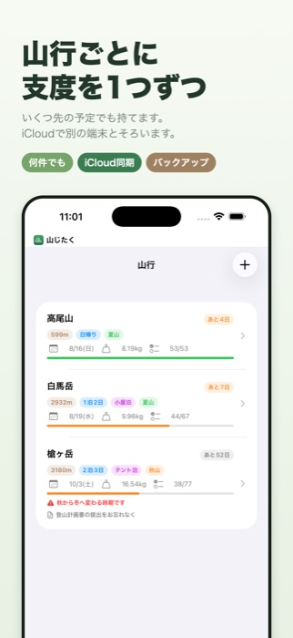

登山の持ち物チェックリスト。標高と季節で、持ち物が変わります。
「この時期、この山、何を持っていけばいい？」に答えるアプリです。 登る山の標高と日付を入れるだけで、その条件に合った持ち物リストを組み立てます。 iPhone 向け・無料・広告なし・登録不要です。










同じ11月でも、低山はまだ秋、2500m級はもう真冬です。 山じたくは標高帯ごとに季節を持っていて、その日その山が春夏秋冬のどれなのかで持ち物を変えます。
はい。アプリ内課金も広告もありません。
自由に足す・消す・名前や重さを直すことができます。カテゴリごとに追加でき、 自分で入力した持ち物も登録できます。条件を変えて作り直しても、 ご自身で触った項目はそのまま残ります。
使えます。名前と標高を手で入力してください。標高から自動で標高帯を判定します。 主要な山100座は一覧から選べます（名前・よみ・エリアで検索できます）。
外部から計画を直接送り込む窓口は公開されていないため、直接の連携はありません。 かわりに、計画と持ち物をテキストで書き出せます。YAMAP の活動日記、ヤマレコの山行記録・計画、 コンパスの備考欄にそのまま貼れます。GPX（山の位置を地点として）も書き出せます。
iPhone 向けに作っていますが、iPad でも iPhone 用アプリとして動きます。 同じ Apple ID なら iCloud で内容がそろいます。
現在ありません。
iCloud 同期を入にしていれば、新しい端末で同じ Apple ID にサインインするだけでそろいます。 設定からバックアップの書き出しもできます。書き出したファイルは iCloud Drive・Google ドライブ・ OneDrive のどこにでも保存でき、新しい端末で「バックアップから読み込む」で戻せます。
端末の「設定 → 山じたく → 通知」が入になっているか確かめてください。 アプリ内の「設定 → 出発前の知らせ」で、予約されている内容も確認できます。 出発が明日以降の山行にだけ通知します。
不具合のご報告、ご要望、収録してほしい山などがありましたら、お気軽にどうぞ。
{kind=link}
{kind=link}
{kind=link}
{kind=link}
{kind=link}
{kind=link}
{kind=link}
{kind=link}
{kind=link}
{kind=link}